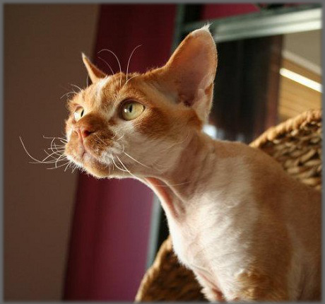

Devon Rex
 Hi, I'm Erika.
Hi, I'm Erika.I live on the east coast of Ireland, in a pretty village near the sea.
My interest in cats began four years ago. I always loved pets. I used to have dogs, but my partner developed an allergy to them, therefore we had to give the dogs to my parents. Understandably we were upset to let the dogs go.
I decided to investigate what alternative pet options we might have.
We discovered a hairless Canadian Sphynx cat, which completely stole our hearts!!!!
We had our first Sphynx and she performed very well in shows...
 However, at one particular show I was stopped in my tracks, when there appeared before me a little miracle!!!
A little Elfe with big eyes, big ears, nice curly coat was looking at me.
I said: "Oh, my God! Who is that?!"
Since that day we began our adventure with the Devon Rex breed - we commenced our search for a kitten...
Since Lola (our first kitten) arrived, I realised that one would not be enough.
Devon Rex became our family obsession.
They have become a part of our family and are loved by everyone. They are happy, healthy, playful and they are a joy to all.
Pedigree Devon Rex kittens for sale
We will have pedigree Devon Rex kittens available for sale. Our next litter is due in mid-December.- Available after they reach 12 weeks old
- Have been vaccinated for:
- Feline Panleucopenia Virus (FPV)
- Feline Calicivirus (FCV)
- Feline Herpesvirus 1 (FVH-1)
- Have been de-wormed and are microchipped
- Come with 12 weeks free Allianz pet insurance
- Are registered with The Governing Council of the Cat Fancy of Ireland
- 3 generation pedigree form is available upon request
Contact us by e-mail at info@celticelfes.com to inquire about availability and pricing.
Devon Rex
A bit about Devon Rex breed:
The Devon Rex is a breed of cat with a curly, very soft short coat similar to that of the Cornish Rex. They are often associated with being one of the most hypo-allergenic cats available because of their type of coat.
The first Devon was discovered by Beryl Cox in Buckfastleigh, Devon, UK in 1960.
Devons, which are medium sized cats, are often called "pixie cats" or "alien cats" because of their unique appearance. Their uncommonly large ears are set low on the sides of their wide heads, their eyes are large, and their noses are slightly upturned. Unlike most cats, their whiskers are very short and often curled to such an extent that it may appear as if they have no whiskers. Their body type is distinctly lightly built. Their long, sturdy legs are well suited for long leaps, and their toes are unusually large. Devon Rex cats come in all colors. The ears are large and slightly rounded.
The typical Devon is active, mischievous, playful, and very people-oriented. They have been described as a cross between a cat, a dog and a monkey (or, more famously, as "a monkey in a cat suit").They are a very intelligent breed; the typical Devon Rex can be trained to walk on a leash, fetch or perform all manner of tricks usually associated with canines, like jump, heel and tag to name a few.
The Devon Rex is a faithful companion and will usually follow the object of their affection from room to room, waiting for the opportunity to leap onto their arms, lap, or shoulder.